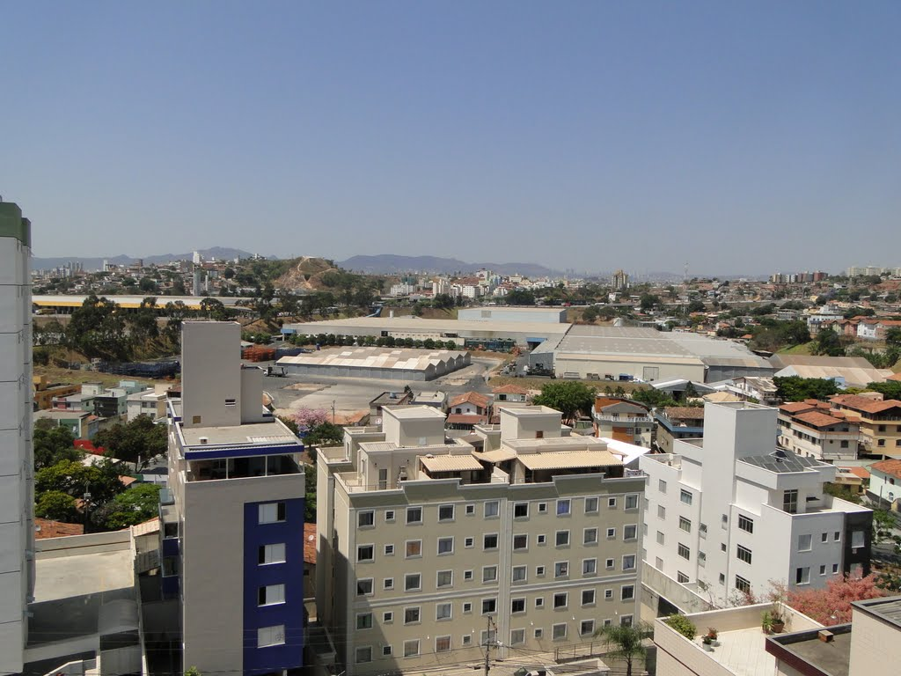

20 Abril 2021
Sobre o bairro Dona Clara

ㅤㅤㅤO bairro Dona Clara é localizado na região leste da Pampulha e devido ao preço mais alto de imóveis nos tradicionais bairros de Belo Horizonte – como Lourdes, Funcionários e outros da área –, o processo de migração de muitos jovens nascidos e criados na região Sul para os arredores da Pampulha vem se tornando algo que ocorre frequentemente. Entre tantos outros logradouros próximos ao belíssimo complexo turístico, o bairro Dona Clara atrai, além do grupo já citado, muitos trabalhadores enfastiados de ter que atravessar toda a cidade para assumir seus postos em locais como a Cidade Administrativa, por exemplo. Isso ocorre por causa da facilidade no acesso e, principalmente, pela qualidade e esmero dos novos empreendimentos de alto padrão erguidos no bairro.
ㅤㅤㅤHaldane Júnior, sócio da Rede Morar Memphis Imóveis, disse: “As pessoas finalmente encontraram a maquete da zona sul em Dona Clara e concluíram apartamentos de alto padrão”. Segundo o executivo, edifícios residenciais recém-construídos nas proximidades costumam ser de três a quatro quartos, e agora existem pelo menos duas vagas de garagem, "obrigatórias". O nível de desenvolvimento é semelhante ao da região Sul, mas o preço é bem inferior ao nível real da área coberta pela Avenida do Contorno. Segundo dados do Sindicato dos Corretores de Imóveis do Estado de Minas Gerais (Creci-MG), o preço médio do metro quadrado do Dona Clara em janeiro foi de R$ 4.420, enquanto o preço médio da Lourdes no mesmo período foi de R$ 8.388..., Quase dobrou tanto quanto a maioria das áreas residenciais da Pampulha.